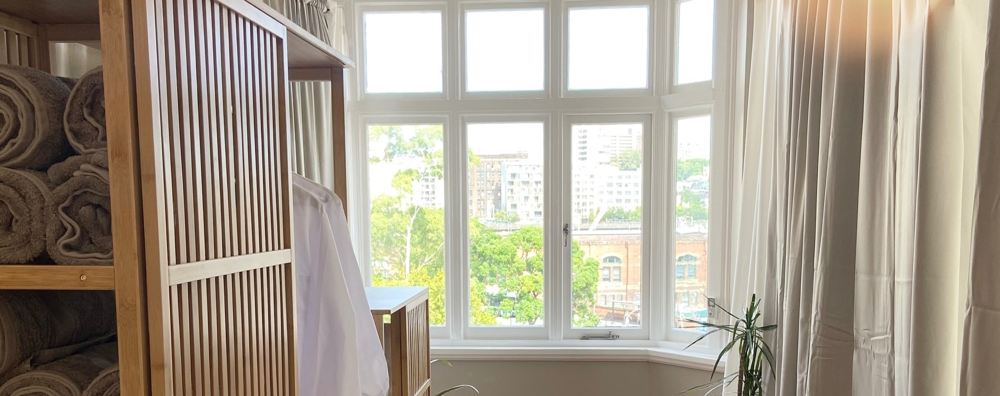
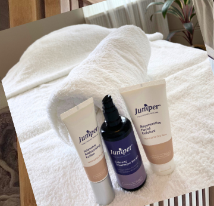

Alpha Remedial pairs Japanese 整体 (seitai) treatment with Juniper's organic skincare — supporting the healing system every client already has, rather than working against it. Alpha Remedialでは、日本の「整体」とオーガニックスキンケア「Juniper」を組み合わせ、お客様がもともと持つ自然治癒力に働きかけます。

"Our organic facial treatments are completely safe and deliver amazing results. Everyone is born with a natural healing system. However, this system can decline due to various factors such as age, stress, illness, and lifestyle habits. Every service at Alpha Remedial focuses on boosting the client's own immunity." 「当店のオーガニックフェイシャルトリートメントは安全性が高く、確かな効果を実感いただけます。人は誰でも生まれながらに自然治癒力を持っていますが、加齢やストレス、病気、生活習慣などによってその力は弱まってしまうことがあります。Alpha Remedialのすべての施術は、お客様ご自身の免疫力を高めることを目指しています。」 — Home, alpharemedial793.wixsite.com
The About page states this a little differently: "All people are born with a natural healing system. However, it is declining due to various causes such as age, stress, vaccines and lifestyle habits." Both pages agree on the same idea — Alpha Remedial's own organic skincare line, Juniper, is chosen because it's "designed to draw out each client's own skin regeneration ability" rather than mask the problem. ABOUTページでは少し違う言い回しで、「人は皆、生まれながらに自然治癒力を持っています。しかし、加齢・ストレス・ワクチン・生活習慣など、さまざまな要因によってその力は低下してしまいます」と紹介されています。どちらのページも伝えたいことは同じです。使用しているオーガニックスキンケアブランド「Juniper」を選んでいるのも、症状を一時的に覆い隠すのではなく、お客様ご自身の肌再生能力を引き出すことを大切にしているからです。
Facial treatments use Juniper's premium organic skincare line, chosen for its gentle, plant-based formulation and its ability to support the skin's own regenerative capacity rather than override it. フェイシャル施術では、プレミアムオーガニックスキンケアブランド「Juniper」を使用しています。肌にやさしい植物由来の処方で、肌自身が持つ再生力を引き出すように作られています。

Founder and lead therapist at Alpha Remedial. Certified in remedial massage in both Japan and Australia, with over 15 years in the industry and more than 20,000 clients treated. Mayumi occasionally runs small, beginner-friendly massage workshops for people who are curious but have never had one. Alpha Remedialの創業者であり、主任セラピスト。日本とオーストラリア両国でリメディアルマッサージの資格を取得し、この業界で15年以上、これまでに2万人以上のお客様を施術してきました。マッサージが気になるけれど受けたことがないという方に向けて、少人数制のワークショップも不定期で開催しています。
Remedial Massage Therapist — certified in Japan & Australia リメディアルマッサージセラピスト — 日本・オーストラリア両国で資格取得"What actually is a massage?" A small, unhurried group session covering hand-to-forearm dry & oil massage and shoulder dry massage. No experience needed — oils, cream and tea included. 「マッサージって、そもそも何？」手〜前腕のドライ＆オイルマッサージ、肩のドライマッサージを体験する少人数制ワークショップです。経験ゼロでもOK。オイル・クリーム・お茶付き。
"No experience needed — we'll take it slow in a small group. Massage isn't just about pressing or kneading hard." 「経験ゼロでもOK！少人数でゆっくり体験していただきます。マッサージは、ただ強く押したり揉んだりするだけではありません。」
Sun 27 Sep, 10:00–11:30 · Level 4, 793 George St, Haymarket · Workshop enquiries:
開催日：9月27日（日）10:00〜11:30 ・ Level 4, 793 George St, Haymarket ・ ワークショップに関するお問い合わせ：
0402 922 505
Dates change — confirm the current session via Fresha or phone before attending.
開催日は変更になる場合があります。ご来店前にFreshaまたはお電話で最新情報をご確認ください。
| Monday月曜日 | Closed定休日 |
| Tue – Sat火〜土 | 10:00 – 20:00 (last booking 18:30)10:00〜20:00（最終受付18:30） |
| Sunday日曜日 | 10:00 – 18:00 (last booking 16:30)10:00〜18:00（最終受付16:30） |
Address住所Level 4, 793 George Street, Haymarket NSW
Phone (general)電話（お問い合わせ用）0466 866 280
Phone (workshop)電話（ワークショップ予約）0402 922 505
Emailメールalpharemedial793@gmail.com